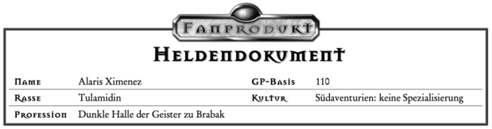
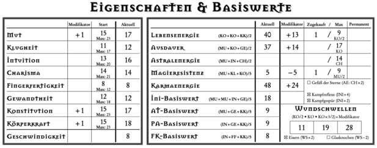
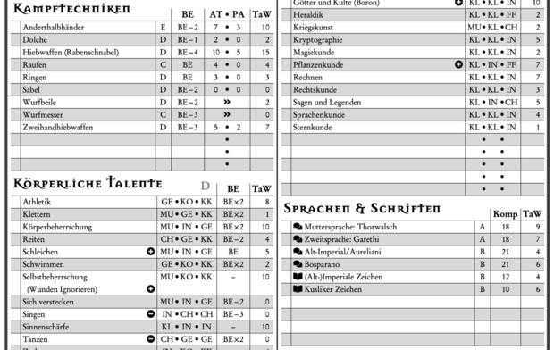
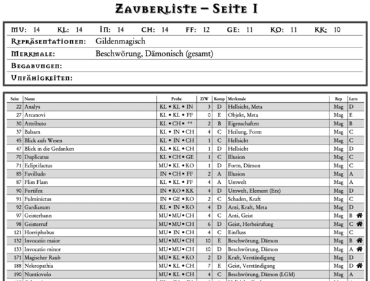
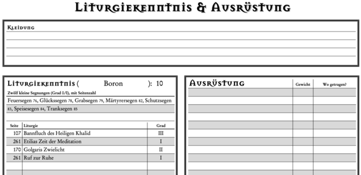

Inoffizielles, LuaLaTeX-basiertes DSA 4.1 Heldendokument
Dieses Projekt stellt ein DSA 4.1 Heldendokument zur Verfügung, das sich am Original-Dokument orientiert. Das Dokument ist mit Eingabedaten – auch aus der Heldensoftware – befüllbar und nimmt einige Änderungen im Detail vor. Das Projekt verwendet LuaLaTeX und ist unter der LaTeX Project Public License verfügbar.
Die Idee des Dokuments ist es, dass du es nach deinen Wünschen und Bedürfnissen konfigurieren kannst. Beispielsweise lässt sich einstellen, wie viele Zeilen für Talentgruppen zur Verfügung gestellt werden oder wie diese Talentgruppen auf dem Talentbogen sortiert sind. Folglich installierst du auf deinem PC einen Generator, der deine Konfiguration einliest und ein PDF daraus erstellt. Zur Installationsanleitung
Aussehen des Dokuments
Das Layout des Dokuments wurde vom Original-Dokument übernommen. Die hier gezeigten Ausschnitte haben einen weißen Hintergrund – standardmäßig wird der Original-Hintergrund verwendet, der hier allerdings aus Urheberrechtsgründen nicht gezeigt werden darf (dies bezieht sich auf die Verbreitung; generierst du das Heldendokument auf deinem PC, darfst du es natürlich im Rahmen einer Privatkopie verwenden).
Die Eigenschaften zeigen den jeweiligen Maximalwert abgeleitet vom Startwert. Bei den abgeleiteten Eigenschaften ist die Start-Spalte weggefallen, weil der Startwert dort keinerlei Relevanz hat. Statt dessen können permanent verlorene LE und AE notiert werden. Statt einer ist Platz für drei Wundschwellen, weil die zusätzlichen eben nicht einfach das doppelte/dreifache der ersten Wundschwelle sind.
In den Talentlisten und anderen derartigen Listen wird zwischen weißer und grauer Hintergrundfarbe pro Zeile alterniert. Dies schützt gegen versehentliches Verrutschen beim Lesen einer Zeile. Die Probe wird für bessere Lesbarkeit in feste Spalten geschrieben. Sprachen und Schriften werden mit entsprechenden Icons markiert, ebenso Mirakel+, Mirakel- und Meisterhandwerk. Talentspezialisierungen werden in Klammern hinter die Talente geschrieben; bei zu wenig Platz in eine neue Zeile.

In den Waffenlisten werden Würfel (W6 und W20) durch entsprechende Icons dargestellt. Der Ausrüstungsbogen unterscheidet sich kaum vom Original.
Zauberliste und Zauberdokument sind hochkant. Die Zauberliste kann mehrere Seiten umfassen. Statt Teile der Zauberbeschreibung im LC zu replizieren, enthält die Zauberliste eine Spalte, in der die Seitennummer im LC notiert werden kann. Hauszauber werden durch ein Icon markiert.
Auf dem Liturgiebogen werden die zwölf kleinen Segnungen kompakt dargestellt, damit genug Platz für sonstige Liturgien ist. Dies ist insbesondere für Spätweihen geschickt, bei denen man nicht unbedingt jede kleine Segnung erlernt.
Konfiguration & Dateneingabe
Der Generator liest eine Datei ein, in der du sowohl verschiedene Layout-Optionen wie auch die Werte deines Helden angeben kannst. Füllst du deinen Bogen gerne von Hand aus, kannst du nur Layout-Optionen angeben (beispielsweise, ob du einen Liturgiebogen, ein Zauberdokument usw. willst). Manche Formatoptionen sind allerdings nur verfügbar, wenn du auch Daten eingibst (zum Beispiel mehrzeilige Talente mit Spezialisierungen).
Die eingegebene Datei benutzt die Syntax der Programmiersprache Lua; du musst aber nicht programmieren können, um sie zu schreiben. Die vorgegebenen Templates geben dir eine Idee, wie Eingabedateien aussehen. Online ist die komplette Formatspezifikation verfügbar, die aber nicht als Tutorial, sondern als Nachschlagewerk gedacht ist.
Werte können nur bei der Erstellung eingegeben werden; das generierte PDF hat keine editierbaren Felder. Dies verbessert die Darstellung auf mobilen Endgeräten, die oftmals keine PDF-Textfelder beherrschen. Außerdem können berechenbare Werte nicht neu berechnet werden, wenn man im fertigen PDF einen Eingabewert ändert. Für die Änderung des Inhalts muss immer die Eingabedatei editiert und dann ein neues PDF erzeugt werden.
Es wurde Wert darauf gelegt, dass der Benutzer größtmögliche Kontrolle über das Aussehen des erstellten Bogens hat.
So sind etwa auch die Basistalente beliebig sortierbar, sodass man in jeder Talentgruppe alle Talente alphabetisch ordnen kann und nicht die Basistalente oben stehen müssen.
Gerade der Talentbogen ist darüber hinaus konfigurierbar:
Die Anzahl Talente in einer Gruppe kann geändert werden, genauso die Reihenfolge der Talentgruppen.
Die Talentgruppe
Es können auch Helden aus der Heldensoftware importiert werden. Dies geschieht, indem aus der Heldensoftware ein Held als XML exportiert wird und dann mit dem Import-Script die XML-Datei in eine Lua-Datei umgewandelt wird. Die Lua-Datei kann danach nachbearbeitet werden (beispielsweise, weil die Heldensoftware gerne halbe Romane in Kultur und Profession schreibt) und schließlich dem Generator übergeben werden.
Die Eingabedatei beherrscht auch Steigerungen. Hierfür werden die initialen Werte des Helden normal als Daten eingegeben, und danach eine Liste von Ereignissen. Ereignisse sind AP-Zugewinn, Steigerung von Talenten, Kauf von Sonderfertigkeiten, und so weiter. Stehen in der Eingabedatei Steigerungen, so werden diese auf die initialen Werte appliziert und im generierten Heldendokument stehen dann die neuen Werte. Das Heldendokument beherrscht alle üblichen Ereignisse.
Berechnete Werte
Im Heldendokument werden alle berechenbare Werte ausgefüllt, für die die benötigten Eingabewerte vorhanden sind.
Beispielsweise wird die Lebensenergie berechnet, wenn
Berechenbare Werte haben mitunter Abhängigkeiten von Vor- und Nachteilen oder Sonderfertigkeiten. Beispielsweise hängt die AsP-Regeneration pro Ruhephase von solchen ab. Während der Generator prinzipiell beliebigen Text für Vor- und Nachteile sowie Sonderfertigkeiten annimmt, werden solche mit Auswirkungen auf Berechnungen speziell eingegeben, sodass der Generator sie erkennt (siehe die Formatspezifikation).